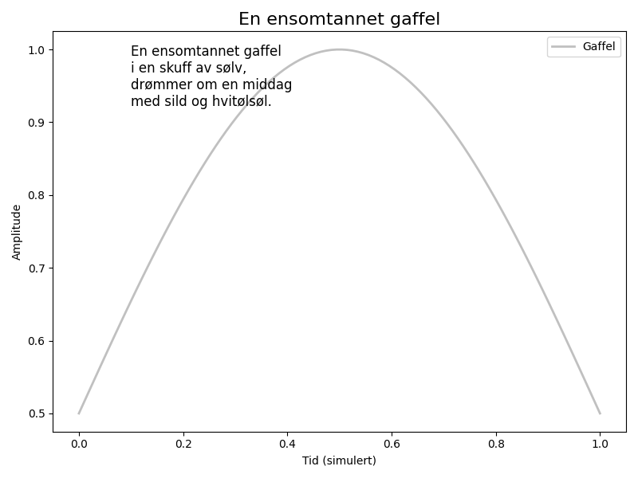

En ensomtannet gaffel i en skuff av sølv, drømmer om en middag med sild og hvitølsøl.

import matplotlib.pyplot as plt
import numpy as np
# Dikt
dikt = """
En ensomtannet gaffel
i en skuff av sølv,
drømmer om en middag
med sild og hvitølsøl.
"""
# Definer data for gaffelen
x = np.linspace(0, 1, 100)
y = np.sin(x * np.pi) * 0.5 + 0.5 # Simuler en kurve
# Lag figur og akse
fig, ax = plt.subplots(figsize=(8, 6))
# Plott kurven
ax.plot(x, y, color='silver', linewidth=2, label='Gaffel')
# Legg til tekst
ax.text(0.1, 0.9, dikt, fontsize=12, ha='left', color='black')
# Legg til tittel og akseetiketter
ax.set_title('En ensomtannet gaffel', fontsize=16)
ax.set_xlabel('Tid (simulert)')
ax.set_ylabel('Amplitude')
# Legg til legende
ax.legend()
# Juster layout
plt.tight_layout()
# Lagre figuren
plt.savefig(output_path)execution_ok=True fallback_used=False image_ok=True